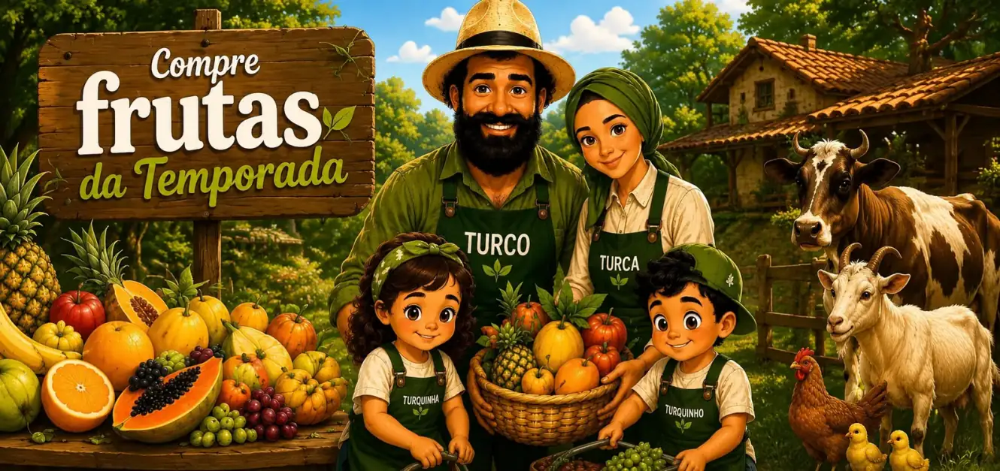
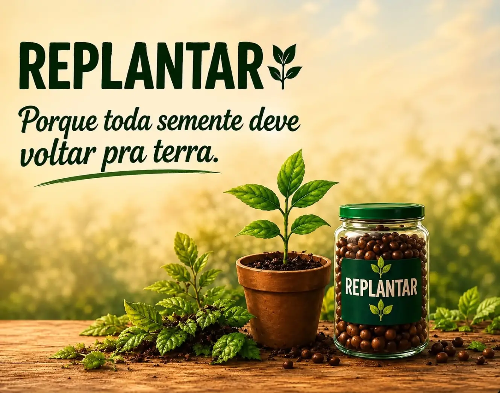
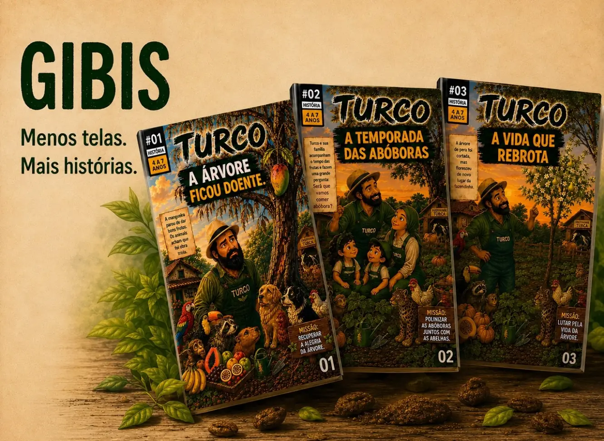
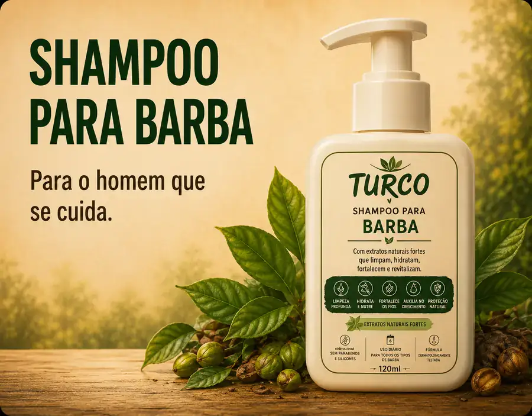
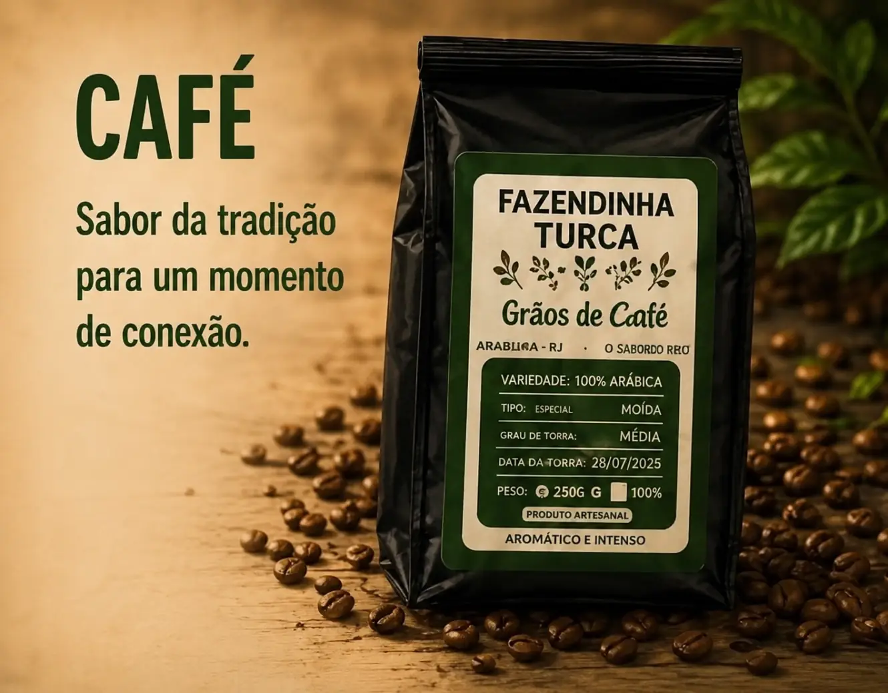
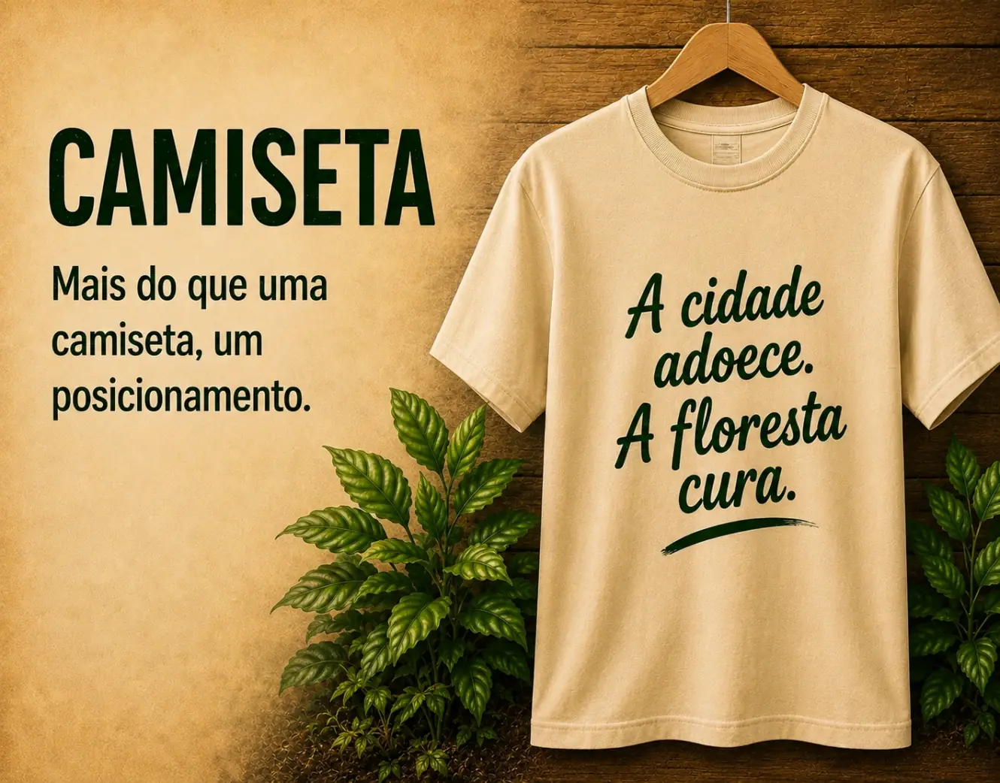
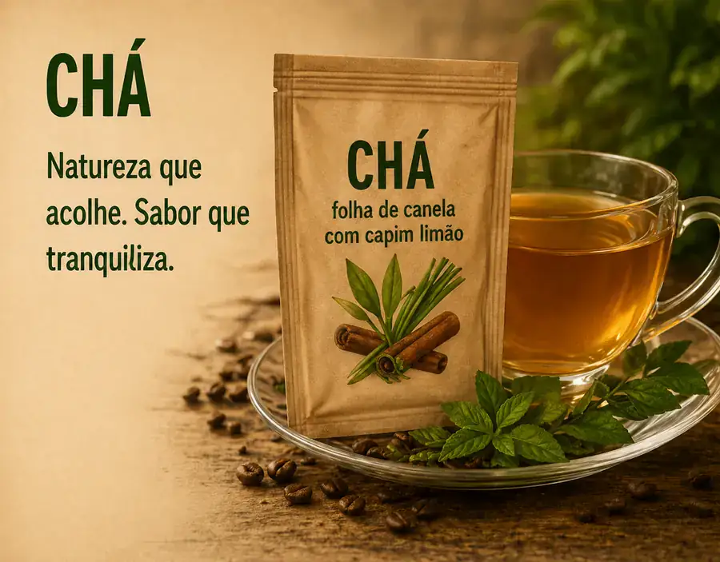

FAZENDINHA
TURCA
TURCA

CADASTRE-SE 🌿Frutas da Temporada com Entrega no Centro de Araruama - RJ.
São Paulo e Campinas
Rio de Janeiro, Araruama, Cabo Frio, Búzios e Rio das Ostras
Belo Horizonte e Uberlândia
Vitória e Vila Velha
Curitiba e Cascavel
Balneário Camboriú e Florianópolis
Porto Alegre e Caxias do Sul


Menos telas. Mais histórias. Para crianças de 2 a 12 anos.
📖 CONHEÇASeu corpo vai aprender a pedir fruta.
🍌 CONHEÇA
Para o homem que se cuida, com ativos naturais.
💧 CONHEÇA
Mais que café, um momento de conexão.
☕ CONHEÇA

Natureza que acolhe. Sabor que tranquiliza.
🍅 CONHEÇAAs frutas da estação são colhidas e entregues frescas apenas em Araruama e região, no Rio de Janeiro. Essa entrega local garante que a fruta chegue no ponto certo, sem perder qualidade no transporte.
Café turco orgânico em grãos, chá do turco calmante, shampoo para barba com ativos naturais, camisetas, Gibi Turco infantil e o e-book 20 Frutas por Dia enviamos para todo o país, com destaque para clientes de São Paulo e Campinas, Rio de Janeiro, Cabo Frio, Búzios e Rio das Ostras, Belo Horizonte e Uberlândia, Vitória e Vila Velha, Curitiba e Cascavel, Balneário Camboriú e Florianópolis, e Porto Alegre e Caxias do Sul.
A Fazendinha Turca nasceu em Araruama, no Rio de Janeiro, com uma missão simples: reconectar as pessoas à natureza.
No início vendíamos apenas as frutas da fazendinha e depois reunimos alimentos naturais e produtos que carregam propósito, incentivando um estilo de vida mais consciente e conectado com a terra.
Nossa atuação vai além das frutas disponíveis na estação: também entregamos queijo, leite, ovo e mel em Araruama.
Produzimos e enviamos para todo o Brasil nosso café orgânico, chás naturais, shampoo para barba, camisetas e o gibi que conta histórias da fazendinha, um projeto que desperta nas crianças o amor pela natureza desde cedo.
A Fazendinha Turca também dá vida a duas campanhas que fazem parte da nossa essência: o Replantar, que transforma sementes em novas árvores e contribui para o reflorestamento, e o Resgatar, dedicado ao resgate, cuidado e proteção de animais.
Mais do que vender produtos, queremos cultivar uma forma diferente de viver: com mais respeito pelas plantas e pelos animais.
Fazendinha Turca.
A natureza todo dia oferece vida.